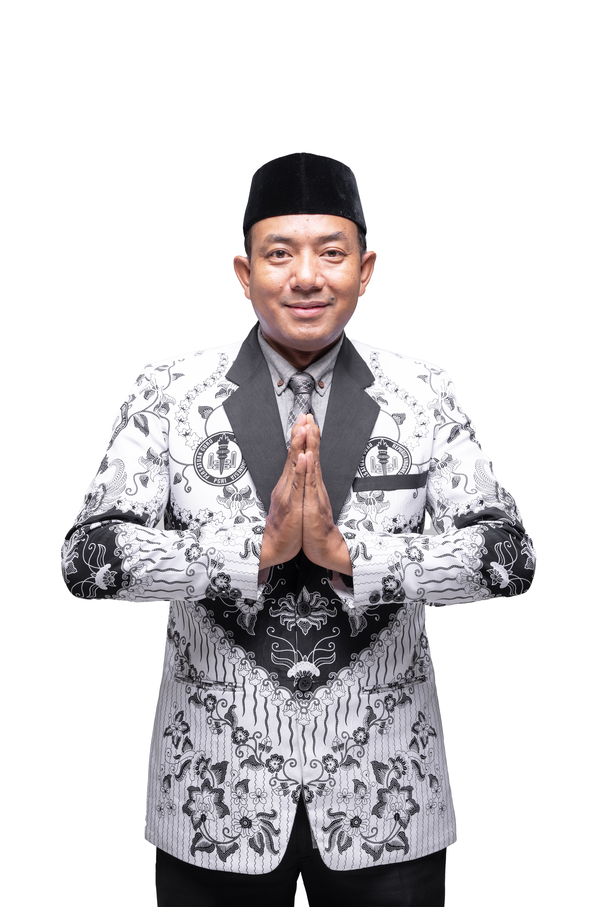

Susunan Pengurus
PGRI CABANG KEC. SAMARANG
MASA BAKTI 2025-2030

Arief Fauzi Mansur, S.Pd.
Ketua Cabang PGRI Samarang
Rian Dermawan, S.Pd.
Wakil Ketua 1
M. Iqbal Faturahman, S.Pd.
Wakil Ketua 2
Teguh Pramegar, S.Pd.
Sekretaris
Hendi Munawar, S.Pd.I.
Wakil Sekretaris
Yusni Saeful Mila, S.Pd.
Bendahara
BIDANG - BIDANG ORGANISASI
Dede Sumarna, S.Pd.
Bidang Organisasi & Kaderisasi
Lina Kurniati, S.Pd.
Pengembangan Profersi & Karier GTK
Yayat Dimyati, S.Ag.
Penegakan Kode Etik & Advokasi
Samsul Basar, S.Ag.
Bantuan Hukum & Perlidungan Profesi
Hj. Empat Patmawati, S.Pd.
Penelitian & Pengabdian Masyarakat
Nurliani Siti Nurjanah, S.Pd.
Pembinaan & Pengembangan Lemdik
Rana Mardiana, S.Pd.,M.Pd.
Kerjasama & Pengembangan usaha
Ujang Karim, S.Pd.
Kesejahteraan & Ketenagakerjaan
Lili Siti Nurlili, S.Pd.
Pemberdayaan Perempuan
Rina Farida, S.Pd.
Komunikasi & Informasi
Uus Kusaeri, S.Pd.SD.
Keanggotaan & Digitalisasi Organisasi
Mamun Alamsah, S.Pd.
Olahraga & Seni Budaya I
Rita Herlina, S.Pd.
Olahraga & Seni Budaya II
Tatang M Tamimi, M.Ag.
Pembinaan Mental & Karakter Bangsa
H. Aceng Juanda, S.Pd.
Hubungan Lembaga, Badan & Organisasi Lainnya
Imas, S.Pd.
Pengembangan PAUDNI, Pendidikan Khusus, & Non Formal